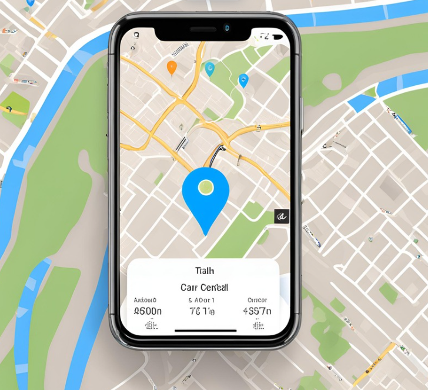
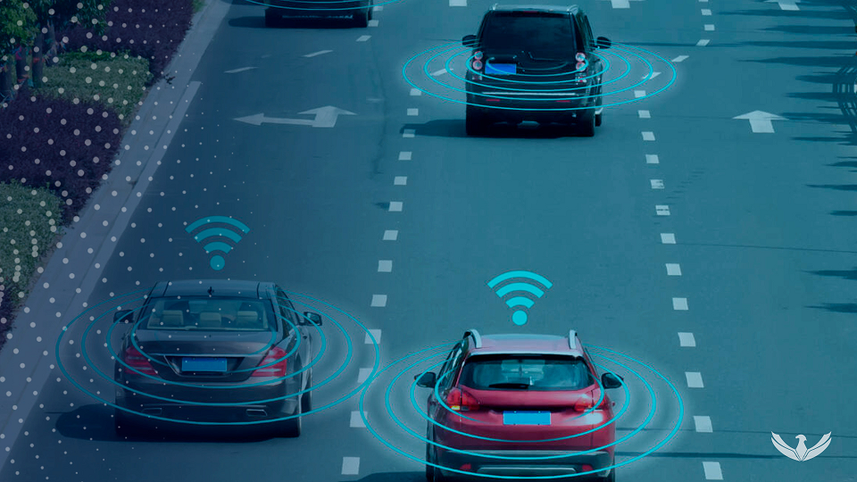
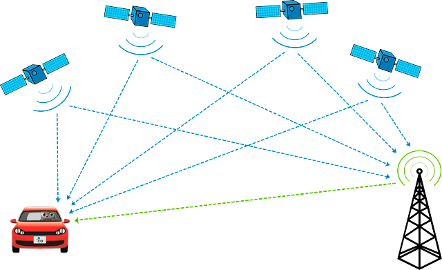

Nos dias atuais, a segurança é uma prioridade para todos, e isso se reflete em nossas escolhas, desde a proteção da nossa família até a segurança dos nossos bens. No mundo automobilístico, uma das ferramentas mais eficazes para garantir a proteção do seu veículo é o rastreador automotivo. Com a crescente incidência de roubo de veículos e a necessidade de monitoramento constante, um rastreador automotivo se tornou uma solução indispensável para quem busca tranquilidade e controle absoluto sobre seu automóvel.
Um rastreador automotivo é um dispositivo eletrônico que, quando instalado em seu veículo, permite que você o acompanhe em tempo real através de um aplicativo ou sistema de monitoramento. Utilizando tecnologias avançadas como GPS (Sistema de Posicionamento Global) e GSM (Sistema Global para Comunicações Móveis), o rastreador fornece a localização exata do veículo, além de oferecer diversas funcionalidades adicionais que garantem segurança e praticidade.
1. Localização em Tempo Real
Um dos maiores benefícios de um rastreador automotivo é a capacidade de localizar seu veículo em tempo real. Se o seu carro for roubado, você poderá rastrear sua localização exata e compartilhar essas informações com as autoridades. Isso aumenta significativamente as chances de recuperação rápida do veículo e reduz o risco de perda total.
2. Alerta de Movimento Não Autorizado
Além da localização em tempo real, muitos rastreadores possuem sensores que detectam movimentos não autorizados. Se o veículo for movimentado sem o devido consentimento, você receberá um alerta imediato em seu smartphone. Essa funcionalidade é essencial para prevenir roubos e garantir que você possa agir rapidamente em situações suspeitas.
3. Geofencing
Os rastreadores modernos frequentemente vêm equipados com a função de geofencing, que permite estabelecer perímetros virtuais ao redor de áreas específicas. Se o seu veículo sair dessa área pré-estabelecida, você será notificado instantaneamente. Isso é especialmente útil se você empresta seu carro para outras pessoas ou se deseja monitorar o uso do veículo em determinadas áreas.
4. Histórico de Rota
Outro recurso valioso é a capacidade de revisar o histórico de rotas percorridas. Isso pode ser útil não apenas para monitorar o uso do veículo, mas também para resolver questões relacionadas a acidentes ou disputas. Ter um registro detalhado das rotas pode fornecer provas concretas em situações de necessidade.
1. Redução de Custos com Seguros
Instalar um rastreador automotivo pode levar a uma redução significativa nos custos com seguros. Muitas seguradoras oferecem descontos para veículos equipados com rastreadores, devido à maior probabilidade de recuperação do veículo em caso de roubo. Esse benefício financeiro pode ajudar a compensar o custo inicial do dispositivo e proporcionar uma economia a longo prazo.
2. Monitoramento do Desempenho do Veículo
Além de funções voltadas para segurança, alguns rastreadores também monitoram o desempenho do veículo. Eles podem fornecer informações sobre a saúde do motor, a qualidade da condução e o consumo de combustível. Esses dados podem ser úteis para otimizar o desempenho do veículo e para programar manutenções preventivas, garantindo que seu carro esteja sempre em condições ideais.
3. Proteção Contra Uso Indevido
Se você empresta seu veículo para amigos, familiares ou funcionários, o rastreador ajuda a garantir que ele seja usado de acordo com suas diretrizes. Além de monitorar a localização, você pode controlar e revisar o uso do carro, evitando abusos e possíveis problemas relacionados ao comportamento do motorista.
4. Assistência em Caso de Emergência
Alguns rastreadores automotivos oferecem serviços de assistência em caso de emergência. Isso pode incluir o envio automático de um alerta para serviços de emergência se o veículo se envolver em um acidente, facilitando a chegada rápida de ajuda e aumentando a segurança dos ocupantes.
A instalação e uso de um rastreador automotivo são simples e intuitivos. A maioria dos dispositivos é instalada discretamente no veículo e não interfere no seu funcionamento. Acompanhar a localização e o status do seu carro é feito através de aplicativos móveis, que são fáceis de usar e oferecem informações detalhadas de forma clara e acessível.
Além disso, a tecnologia atual permite que esses sistemas sejam acessados a partir de qualquer lugar com uma conexão à internet. Isso significa que você pode monitorar seu veículo a partir de qualquer lugar do mundo, tornando a gestão da segurança do seu carro extremamente conveniente.
Investir em um rastreador automotivo é uma decisão sábia para quem valoriza a segurança, a proteção e a tranquilidade. Com recursos que vão desde a localização em tempo real até alertas de movimento não autorizado e monitoramento do desempenho do veículo, um rastreador automotivo oferece uma camada adicional de segurança que pode fazer toda a diferença em situações críticas.
Além dos benefícios diretos, como a redução de custos com seguros e a proteção contra uso indevido, um rastreador automotivo proporciona a paz de espírito que vem com o conhecimento de que seu veículo está sempre sob vigilância. Em um mundo onde a segurança e o controle são cada vez mais essenciais, a escolha de um rastreador automotivo é um investimento no bem-estar e na proteção do seu patrimônio mais valioso.
Ao optar por adquirir nosso serviço de rastreamento automotivo, você está garantindo que seu veículo tenha a mais alta tecnologia em segurança, com suporte contínuo e recursos avançados que atendem às suas necessidades. Não deixe a segurança do seu veículo ao acaso—invista em um rastreador automotivo e experimente os benefícios de ter um controle total sobre a proteção do seu carro.
Entre em contato conosco!
Telefone: (19) 9 9999-9999
Email: leoboroca@hotmail.com
CNPJ: XXXXXXXXXX-XXXX
Piracicaba-SP
CEP:13406-304